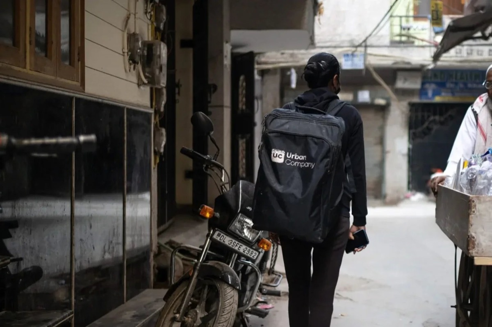

What we do
The D3 Lab is a research group led by Dr. Naveena Karusala, and is part of the School of Interactive Computing at Georgia Tech. We study and shape the role of technology in our collective health and well-being. We ask how emerging technologies interact with inequities shaping who gets care and what kind, and how we can move towards more just and accountable design and governance. We work directly with communities—labor unions, community-based organizations, health workers, care seekers, local governments—to identify questions that serve the public interest and further our understanding of technology, care, and justice.
"D3" refers to "dot dot dot," a symbol of open-endedness and curiosity.
Our work

Women’s occupational health
Focusing on domains from gig work to sugarcane cutting, we uncover how the workplace variously becomes an enabler or a barrier to women’s health. We also examine how design and policy measures might better align work and health, and leverage the workplace as a site for care and sensemaking.
[Photo: Deepti Asthana]
Worker-led AI governance
For AI to support job and service quality, care workers must have a meaningful say in the design and governance of AI tools. We investigate how data, design, and coalitions can bolster the capacity of health workers to advocate for accountability of AI in healthcare.
[Photo: Martin do Nascimento]
AI contestation
As AI tools increasingly shape who gets care and what kind, care seekers require pathways for identifying, appealing, and contesting harms caused by AI. In the context of health insurance coverage denials, we examine how design, policy, and communities of practice can contribute to effective contestation.
[Photo: Health Affairs]
Work with us
If you're interested in...
...doing research with the D3 Lab, fill out this form.
...joining us as a PhD student, apply to Georgia Tech’s HCC or CS PhD and mention Naveena in your application.
...partnering with us, please reach out to discuss how research could contribute to healthier and more caring futures.